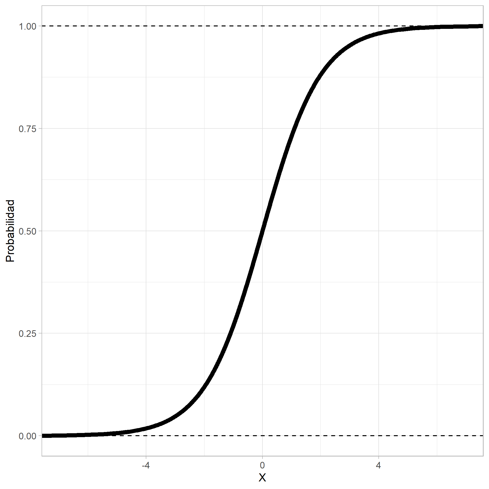
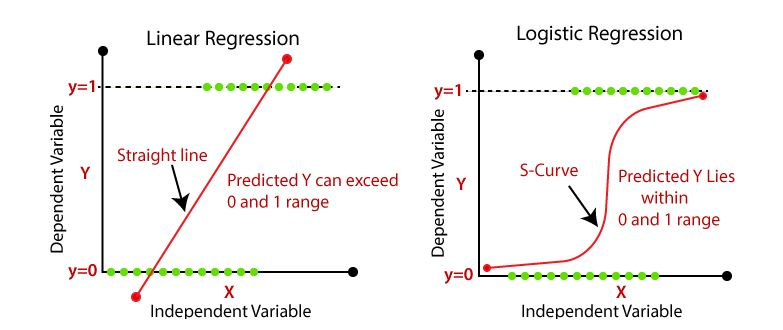
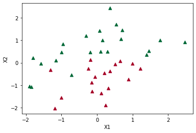
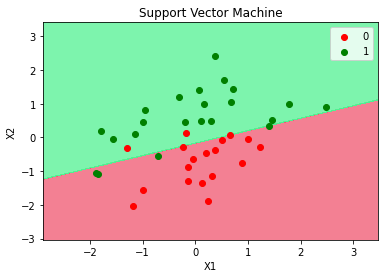

Regresión Logística¶
La Regresión Logística, también llamada Logit es un clasificador binario.
Es un método de regresión para modelar variables categóricas, particularmente variables binarias también llamadas variables dicotómicas. La variable dependiente \(y\), solo puede tener dos valores: \(1\) o \(0\), lo que representa “si” y “no”. También podría indicarse “éxito” y “fracaso” o “verdadero” y “falso”. Estas asignaciones son arbitrarias a una característica cualitativa. El uso de la regresión logística clasifica las observaciones en estas dos categorías. Cada observación pertenece a la categoría 1 o a la categoría 0 dependiendo de la probabilidad estimada en el modelo. Por tanto, con la regresión logística no se predice si una observación es 1 o 0, sino la probabilidad de que se produzca la categoría de 1.
La variable respuesta \(y\), es una variable aleatoria Bernoulli con la siguiente distribución de probabilidad.
\(y = 1\): con una probabilidad, \(p\)
\(y = 0\): con una probabilidad, \(1 - p\)
El valor esperado de \(y\) es \(p\), es decir, el valor esperado es la probabilidad de que la variable \(y\) tenga el valor de 1.
Como la variable respuesta \(y\) es binaria, se debe usar una función no lineal que podría ser creciente o decreciente y en forma de \(S\) o \(S\) invertida.
La función que más se usa es la logística:
O lo que es igual:
El objetivo del modelo de regresión logística binaria es estimar la probabilidad de que una variable \(y\) de dos categorías tome el valor de \(1\) (“si”) en lugar de \(0\) (“no”).
Al igual que en los modelos de regresión lineal, el modelo logístico incluye variables explicativas o regresoras que pueden ser continuas o variables indicadoras. La regresión logística binaria logra esto con la transformación de la ecuación de regresión mediante el uso de la función logística.
En el denominador de esta ecuación aparece la ecuación de regresión lineal, pero tiene una transformación. Con esta función se garantiza que los valores predichos ven entre cero y uno, tal como se supone que lo hacen las probabilidades.

Sigmoide¶

Regression¶
Regularización Regresión Logística:¶
Al igual que los otros modelos lineales, los modelos de Regresión Logística se pueden regularizar utilizando penalizaciones \(L1\) o \(L2\).
El hiperparámetro que controla la fuerza de regularización de un modelo
Scikit-Learn LogisticRegression no es alfa (como en otros
modelos lineales), sino su inverso: C. Cuanto mayor sea el valor de C,
menos se regulariza el modelo.
Regresión Logística en Python:¶
Se usará scikit-learn en Python para implementar la clasificaicón
con la Regresión Logística:
En Python se debe importar el módulo LogisticRegression:
from sklearn.linear_model import LogisticRegression
Luego se crea un objeto clasificador indicando con la función
LogisticRegression(), el cual lo llamaremos log_reg así:
log_reg = LogisticRegression()
El ajuste del modelo se hace con la función .fit() así:
log_reg.fit(X, y)
Por último, se realiza la predicción con el modelo ajustado usando la
función .predict(), los valores predichos los llamaremos y_pred:
y_pred = log_reg.predict(X)
Evaluación del desempeño:¶
En los métodos de clasificación se usan muchas métricas para evaluar el desempeño (performance) del modelo, pero por ahora nos enfocaremos en la precisión.
Importaremos el módulo accuracy_score así:
from sklearn.metrics import accuracy_score
El accuracy es una comparación entre los valores reales y los predichos. Se realiza de la siguiente manera:
accuracy_score(y, y_pred)
Resumen del código:
from sklearn.linear_model import LogisticRegression
from sklearn.metrics import accuracy_score
log_reg = LogisticRegression()
log_reg.fit(X, y)
y_pred = log_reg.predict(X)
accuracy_score(y, y_pred)
Código:¶
Importar librerías:
import pandas as pd
import numpy as np
import matplotlib.pyplot as plt
Importar datos:
df = pd.read_csv("Clasificación.csv", sep=";", decimal=",")
print(df.head())
X1 X2 y
0 50.24 10.06 1
1 47.71 9.16 0
2 48.10 10.18 1
3 52.77 10.24 1
4 49.48 9.57 0
Visualización de los datos:
plt.scatter(df["X1"], df["X2"], marker="^", c=df["y"], cmap=plt.cm.RdYlGn)
plt.xlabel("X1")
plt.ylabel("X2")
Text(0, 0.5, 'X2')

X = df[["X1", "X2"]]
print(X.head())
X1 X2
0 50.24 10.06
1 47.71 9.16
2 48.10 10.18
3 52.77 10.24
4 49.48 9.57
y = df["y"]
print(y.head())
0 1
1 0
2 1
3 1
4 0
Name: y, dtype: int64
Escalado de variables:
from sklearn.preprocessing import StandardScaler
scaler = StandardScaler()
X = scaler.fit_transform(X)
print(
X[:10,]
)
[[ 0.29938111 0.48540279]
[-1.17998259 -2.03617016]
[-0.95193838 0.82161252]
[ 1.77874481 0.98971739]
[-0.14501273 -0.88745359]
[ 0.54496718 1.69015432]
[ 0.36954856 2.41860873]
[ 1.0010556 -0.04692927]
[ 0.67945479 1.04575234]
[ 0.32277026 -1.13961089]]
plt.scatter(X[:, 0], X[:, 1], marker="^", c=y, cmap=plt.cm.RdYlGn)
plt.xlabel("X1")
plt.ylabel("X2")
Text(0, 0.5, 'X2')

Ajuste del modelo:
from sklearn.linear_model import LogisticRegression
from sklearn.metrics import accuracy_score
log_reg = LogisticRegression()
log_reg.fit(X, y)
y_pred = log_reg.predict(X)
accuracy_score(y, y_pred)
0.85
Visualización de los resultados:
from matplotlib.colors import ListedColormap
X_Set, y_Set = X, y
X1, X2 = np.meshgrid(
np.arange(start=X_Set[:, 0].min() - 1, stop=X_Set[:, 0].max() + 1, step=0.01),
np.arange(start=X_Set[:, 1].min() - 1, stop=X_Set[:, 1].max() + 1, step=0.01),
)
plt.contourf(
X1,
X2,
log_reg.predict(np.array([X1.ravel(), X2.ravel()]).T).reshape(X1.shape),
alpha=0.75,
cmap=ListedColormap(("#F0566F", "#51F192")),
)
plt.xlim(X1.min(), X1.max())
plt.ylim(X2.min(), X2.max())
for i, j in enumerate(np.unique(y_Set)):
plt.scatter(
X_Set[y_Set == j, 0],
X_Set[y_Set == j, 1],
c=ListedColormap(("red", "green"))(i),
label=j,
)
plt.title("Support Vector Machine")
plt.xlabel("X1")
plt.ylabel("X2")
plt.legend()
plt.show()
c argument looks like a single numeric RGB or RGBA sequence, which should be avoided as value-mapping will have precedence in case its length matches with x & y. Please use the color keyword-argument or provide a 2D array with a single row if you intend to specify the same RGB or RGBA value for all points. c argument looks like a single numeric RGB or RGBA sequence, which should be avoided as value-mapping will have precedence in case its length matches with x & y. Please use the color keyword-argument or provide a 2D array with a single row if you intend to specify the same RGB or RGBA value for all points.
